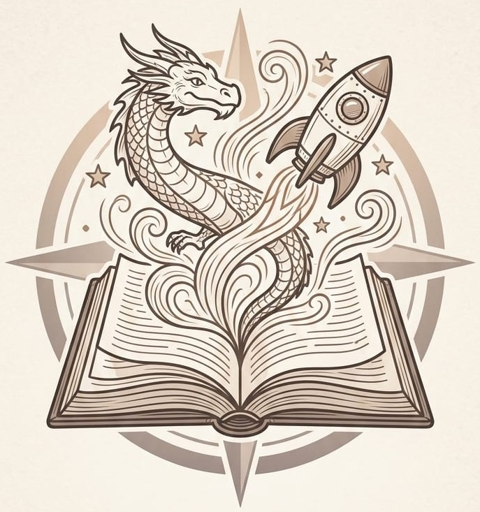

El diario de Ana Frank
Historias que inspiran

BookSparkTU PRÓXIMO CAPÍTULO
Encuentra una historia que te guste y convierte la lectura en un hábito.
Explorar libros Ver mi bibliotecaHistorias que inspiran
Una historia por descubrir
Viaja con la imaginación
ESTA SEMANA
Lee un poco cada día y registra tu progreso.